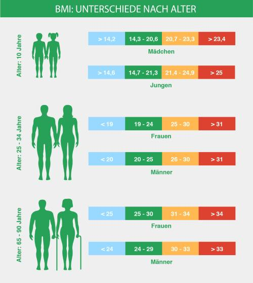

Der Body-Mass-Index (BMI) ist eine Maßzahl zur Beurteilung des Körpergewichts. Er ergibt sich aus Körpergewicht in Kilogramm geteilt durch die Körpergröße in Meter zum Quadrat. Allerdings ist der BMI alleine nur bedingt aussagekräftig, da er nichts über die Körperzusammensetzung der Person aussagt. So können sehr große oder kleine Menschen sowie Menschen mit hohem Muskelanteil einen erhöhten BMI aufweisen und dennoch nicht übergewichtig sein.
Wie wird der BMI berechnet? Body Mass Index (kg/m²) = Körpergewicht in Kilogramm (kg) : Körpergröße in Meter zum Quadrat (m²) Bei einer Person mit der Körpergröße von 170 cm und dem Körpergewicht von 70 kg errechnet sich der BMI-Wert folgendermaßen: BMI-Wert = 70 kg : (1,7 m x 1,7 m) = 24,2 kg/ m² Laut Weltgesundheitsorganisation (WHO) gilt ein Body-Mass-Index ab 25 kg/m² als Übergewicht und ein BMI von 30 kg/m² und höher als Adipositas. Der Normalbereich liegt zwischen den Werten 18,5 bis 24,9 kg/m² Liegt der Wert unterhalb von 18,5 kg/m², spricht man von Untergewicht. Auf der Website der Deutschen Adipositas Gesellschaft finden Sie einen BMI-Rechner für Erwachsene sowie einen BMI-Rechner für Kinder und Jugendliche (inkl. Berücksichtigung der Perzentilen).
Der BMI alleine ist nur wenig aussagekräftig und sagt nichts über die Körperzusammensetzung aus. So kann z.B. eine sportlich aktive Person mit einem BMI von 26 und einem hohen Muskelanteil nicht als übergewichtig betrachtet werden. Auch wenn diese laut BMI-Einteilung in die Kategorie „übergewichtig“ fällt. Bei sehr großen oder kleinen Menschen ist der BMI ebenfalls nur begrenzt aussagekräftig. Zu berücksichtigen ist, dass sich der BMI mit zunehmendem Alter erhöht. Weitere Informationen erhalten Sie auf der Website der Österreichischen Gesellschaft für Ernährung (ÖGE).
| Kategorie | BMI | Körpergewicht | |
|---|---|---|---|
| starkes Untergewicht | <= 16,0 | ||
| mäßiges Untergewicht | 16,0-17,0 | Untergewicht | |
| leichtes Untergewicht | 17,0-18,5 | ||
| Normalgewicht | 18,5-25,0 | Normalgewicht | |
| Präadipositas | 25,0-30,0 | Übergewicht | |
| Adipositas Grad | | 30,0-35,0 | ||
| Adipositas Grad || | 35,0-40,0 | Adipositas | |
| Adipositas Grad ||| | >=40,0 | ||